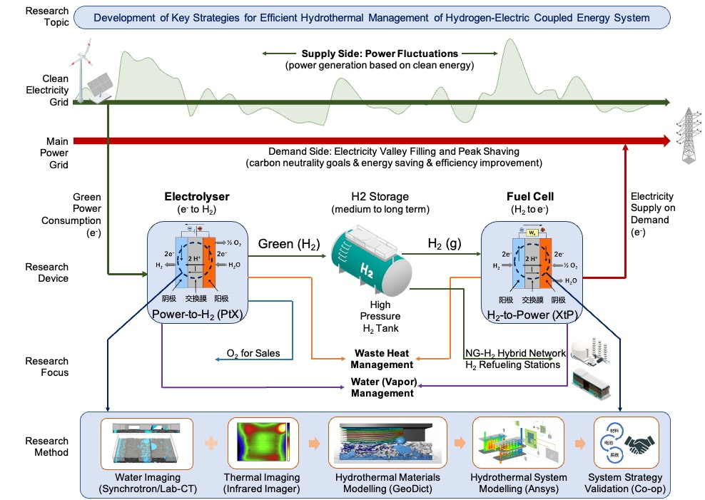

Forschungsfortschritt 「Wissenschaft ohne Grenzen」


Forschungsinteressen
Von der Wissenschaft zur Industrie widme ich meine Forschung den Bereichen saubere und effiziente Energie sowie kohlenstoffarme intelligente Verkehrssysteme, mit interdisziplinären Forschungsinteressen, die Folgendes umfassen:
- Erneuerbare Energien, Wasserstoff, Brennstoffzellen, Elektrolyseure, PV, Batterien
- Energiwirtschaft, Energiepolitik, ESG-Investitionen, digitale Nachhaltigkeit
- Funktionale Materialien, Halbleiter, Polymere, Metalloxide
Forschungsschema
「Wasserstoff-Elektrizitäts-gekoppeltes
Energiesystem」

Publikationen「Wissenschaft ohne Grenzen」
- Saubere Energietechnologien / Elektrochemie
-
S. N. Artigas, H. Xu* [FDB], F. Mack
Verwendung der Verteilung der Relaxationszeitenanalyse als In-situ-Diagnosetool für das Wasser-Management in PEM-Brennstoffzellen-Anwendungen [J]
Mitverfasser:[Freudenberg] | Zitiert von:[Tsinghua Univ.]
2024 | J. Power Sources [PDF] -
H. Xu* [PSI], M. Bührer, F. Marone, Prof. T. J. Schmidt, F. N. Büchi, J. Eller
Auswirkungen der Substrate von Gasdiffusionsschichten auf das Wasser-Management in PEFC: Teil II. In situ Flüssigkeits-Wasser-Entsättigung durch Verdampfung [J]
Mitverfasser:[Schweizer Lichtquelle] | Zitiert von:[TOYOTA] [BOSCH]
2022 | J. Electrochem. Soc. [PDF] -
S. van Rooij, M. Magnini, A. Mularczyk, H. Xu* [PSI], F. N. Büchi [PSI], Prof. S. Haussener
[EPFL]
Leitfähiger Wärmetransport in teilweise gesättigten Gasdiffusionsschichten mit Verdunstungskühlung [J]
Co-Autor:[Schweizer Lichtquelle] [EPFL]
2022 | J. Electrochem. Soc. [PDF] -
H. Xu* [PSI], S. Nagashima [TOYOTA], H. Nguyen, K. Kishita, F. Marone, F. N. Büchi, J.
Eller [PSI]
Temperaturabhängiger Wassertransportmechanismus in PEFC-Gasdiffusionsschichten, aufgedeckt durch subsekunden operando Röntgen-Tomographie-Mikroskopie. [J]
Mitverfasser:[TOYOTA] | Zitiert von:[BOSCH] [Tsinghua Univ.] [Univ. of Toronto]
2021 | J. Power Sources [PDF] -
H. Xu* [PSI], M. Bührer, F. Marone, Prof. T. J. Schmidt [ETH], F. N. Büchi, J. Eller
[PSI]
Auswirkungen der Substrate von Gasdiffusionsschichten auf das Wasser-Management in PEFC: Teil I. Operando Flüssigkeits-Wassersättigung und Gasdiffusions-Eigenschaften [J]
Mitverfasser:[Schweizer Lichtquelle] | Zitiert von:[Deutsches Zentrum für Luft- und Raumfahrt] [TOYOTA] [Tsinghua Univ.]
2021 | J. Electrochem. Soc. [PDF] -
C. Csoklich, H. Xu* [PSI], F. Marone, Prof. T. J. Schmidt [ETH], F. N. Büchi [PSI]
Laserstrukturierte Gasdiffusionsschichten für verbesserten Wassertransport und Brennstoffzellenleistung
Mitverfasser:[Schweizer Lichtquelle] | Zitiert von:[Technisches Institut Tokio] [Universität für Wissenschaft und Technologie Hongkong] [Tsinghua Univ.]
2021 | ACS Appl. Energy Mater. [PDF] -
Y. Nagai [TOYOTA], J. Eller, T. Hatanaka, S. Yamaguchi, S. Kato, F. Marone, H. Xu* [PSI],
F. N. Büchi.
Verbesserung des Wasser-Managements in Brennstoffzellen durch mikroporöse Schichtmodifikationen: Schnelle operando tomographische Bildgebung von Flüssigwasser. [J]
Mitverfasser:[TOYOTA] | Zitiert von:[MIT] [Deutsches Zentrum für Luft- und Raumfahrt] [State Power Investment Co.]
2019 | J. Power Sources [PDF]
- Computational Imaging / Deep Learning
-
M. Bührer, H. Xu* [PSI], A. Hendriksend, F. N. Büchi, J. Eller, Prof. M. Stampanoni [ETH],
F.
Marone [SLS]
Klassifikation dynamischer Prozesse in zeitaufgelöster XTM basierend auf Deep Learning [J]
Mitverfasser:[Schweizer Lichtquelle] [CWI Amsterdam] | Zitiert von:[Stanford Univ.] [RWTH Aachen]
2021 | Scientific Reports [PDF] -
M. Bührer, H. Xu* [PSI], J. Eller, Prof. J. Sijbers, Prof. M. Stampanoni [ETH], F. Marone
[SLS]
Aufdeckung der Wasser-Dynamik in Brennstoffzellen anhand zeitaufgelöster tomographischer Mikroskopiedaten [J]
Mitverfasser:[Schweizer Lichtquelle] [Univ. of Antwerp] | Zitiert von:[Univ. of Tokyo] [Univ. of Toronto]
2021 | Scientific Reports [PDF] -
H. Xu* [PSI], M. Bührer, F. Marone, Prof. T. J. Schmidt [ETH], F. N. Büchi, J. Eller
[ETH]
Optimale Bildrauschunterdrückung für operando XTM von Flüssigwasser in PEFC-Gasdiffusionsschichten
Mitverfasser:[Schweizer Lichtquelle] | Zitiert von:[CAS Dalian Institut für Chemische Physik] [Univ. of Toronto] [Univ. College London]
2020 | J. Electrochem. Soc. [PDF] -
H. Xu* [PSI], F. Marone, S. Nagashima, H. Nguyen, K. Kishita, F. N. Büchi, J. Eller
(Eingeladen) Erforschung der sub-sekunden und sub-mikron XTM-Bildgebung von Flüssigwasser in PEFC-GDLs. [J]
Mitverfasser:[Schweizer Lichtquelle] [TOYOTA] | Zitiert von:[Europäisches Synchrotronstrahlungszentrum] [Nationales Brennstoffzellenforschungszentrum der USA] |[ECS Tagungsreisepreis]
2019 | ECS Transactions [PDF] -
H. Xu* [PSI], M. Bührer, F. Marone, Prof. T. J. Schmidt [ETH], F. N. Büchi, J. Eller
[PSI]
Bekämpfung des Rauschens: An den Grenzen der sub-sekunden Röntgen-Tomographischen Mikroskopie von PEFC. [J]
Mitverfasser:[Schweizer Lichtquelle] | Zitiert von:[Nationales Argonne-Labor] [TOYOTA] |[Schweizer Lichtquelle] |[ModVal Best Poster Award]
2017 | ECS Transactions [PDF]
- Materialwissenschaft / Chemieingenieurwesen
-
Prof. H. Zhang, R. Wu, H. Xu* [BJTU], F. Li, S. Wang, J. Wang [BJUT], T. Zhang
Eine einfache Sprühreaktionssynthese und Charakterisierung von hierarchisch porösen SnO2-Mikrosphären für verbesserte Farbstoff-sensibilisierte Solarzellen. [J]
2017 | RSC Advances [PDF][BJTU] -
Prof. H. Zhang [BJTU], H. Xu* [BJTU], J. Wan, Prof. L. Yan, C. Dai
Präparation neuer poröser Oxid-Kugelpulver durch Sprühreaktionstechnik. [J]
2012 | Vacuum and Cryogenics [Link][BJTU] -
Q. Xiaoyue, H. Xu* [BJTU], X. Zhou
Zersetzung von hochaktiven Cypermethrin durch Ultraschallbestrahlung in Kombination mit Photokatalyse durch TiO2
2012 | Chemistry Research [Link][BJTU]
Patente
-
Gerät zur magnetischen Trennung an einer annularen Gas-Flüssigkeits-Grenzfläche [P]
Erfinder: Prof. M. Fu, Prof. H. Zhang, H. Xu (BJTU), Prof. L. Yan
Chinesisches Patent Nr.: CN102441489B, erteilt am 11. Oktober 2013. [Erteilung] -
Kontinuierlich betriebene magnetische Trennung an einer annularen Gas-Flüssigkeits-Grenzfläche
[P]
Erfinder: Prof. H. Zhang, H. Xu (BJTU), Prof. M. Fu, Prof. L. Yan
Chinesisches Patent Nr.: CN102441490A, erteilt am 1. November 2013. [Erteilung] -
Ultraschall-Photokatalytische Oxidationsgerät zur Reinigung von Obst und Gemüse [P]
Erfinder: X. Zhou, H. Xu (BJTU), Prof. H. Jiang, X. Qi
Chinesisches Patent Nr.: CN202311136U, erteilt am 9. Mai 2012. [Erteilung]
Technische Berichte
-
H. Xu [TUM], Dr. B. Vinçon-Leite, Y. Luo
Modellierung der Cyanobakteriendynamik für das YuQiao-Reservoir in Tianjin, China [R]
2016 | Trainingsbericht.[École des Ponts ParisTech] &[École Polytechnique] . Paris, Frankreich. -
H. Xu [UR1], Dr. W. Lu, Dr. A. Madsen, Prof. S. Di Matteo
Entwurf und Bau eines Teststands für die Split- und Verzögerungslinie am europäischen XFEL [R]
2015 | Praktikumsbericht.[Europäisches XFEL] , Hamburg, Deutschland. [PDF]
Öffentliche Datensätze
-
TomoBank: Röntgenbildgebungs-Datensatz von Brennstoffzellen
Kuratoren: M. Bührer, H. Xu* [PSI], F. Marone
2019 | US-Energieministerium - Argonne National Laboratory © Urheberrecht. Rev. f4253f55. [Link]
Konferenzen
- Elektrochemie / Physik / Materialwissenschaften:
-
H. Xu [PSI], M. Bührer, F. Marone, T. J. Schmidt, F. N. Büchi, J. Eller
Einfluss der Porengrößenverteilung auf die Operando-Flüssigkeitssättigung in GDL.
2019 | 236. Treffen der Electrochemical Society (ECS), Atlanta, USA. [Referent] [Link] -
H. Xu [PSI], M. Bührer, F. Marone, T. J. Schmidt, F. N. Büchi, J. Eller
Fortschritte bei der 10Hz Operando-Röntgen-Tomographischen Bildgebung von Wasser in GDLs von PEFC.
2018 | 8. Internationale Konferenz über Grundlagen und Entwicklung von Brennstoffzellen (FDFC), Nantes, Frankreich. [Referent] [Link] -
H. Xu [PSI], M. Bührer, F. Marone, T. J. Schmidt, F. N. Büchi, J. Eller
Studien zur Wasserverteilung in der Gasdiffusionsschicht von PEFCs mittels Röntgen-Tomographischer Mikroskopie
2018 | 69. Jahrestagung der International Society of Electrochemistry (ISE), Bologna, Italien. [Poster] [Link] -
H. Xu [PSI], M. Bührer, F. Marone, T. J. Schmidt, F. N. Büchi, J. Eller
Wasserverteilung in der Gasdiffusionsschicht von PEFCs: Studien mittels Röntgen-Tomographischer Mikroskopie
2018 | 15. Symposium über Brennstoffzellen-Modellierung und experimentelle Validierung (ModVal), Aarau, Schweiz. [Best Poster Award] [Link] -
H. Xu [PSI], M. Bührer, F. Marone, T. J. Schmidt, F. N. Büchi, J. Eller
Quantifizierung der Merkmalserkennbarkeit für subsekündliche Röntgen-Tomographische Mikroskopie von PEFC.
2017 | 6. Europäisches PEFC- und Elektrolyseur-Forum (EFCF), Luzern, Schweiz. [Referent] [Link] -
H. Xu [PSI], M. Bührer, F. Marone, T. J. Schmidt, F. N. Büchi, J. Eller
Bewertung des Kontrast-Rausch-Verhältnisses für die Röntgen-Computertomographische Bildgebung von Wasser in Polymer-Elektrolyt-Brennstoffzellen
2017 | 14. Symposium über Brennstoffzellen-Modellierung und experimentelle Validierung (ModVal), Karlsruhe, Deutschland. [Poster] [Link] -
H. Xu [TUM], E. Metwalli, P. Müller-Buschbaum
Nanopartikel-gefüllte temperaturreaktive Diblock-Copolymere für magnetische Sensoranwendungen.
2016 | Jahrestreffen des EU Erasmus MaMaSELF Projekts, Rigi-Berg, Schweiz. [Referent] [Link] -
H. Xu [TUM], E. Metwalli, P. Müller-Buschbaum
Magnetische Eigenschaften und Struktur von temperaturreaktiven Polystyrol-block-Poly(N-isopropylacrylamid)/Eisenoxid-Nanokomposit-Dünnfilmen.
2016 | 80. Jahrestreffen der Deutschen Physikalischen Gesellschaft & DPG Frühjahrsmeeting (DPG), Regensburg, Deutschland. [Poster] [Link] -
H. Xu [BJTU], Prof. H. Zhang, R. Wu
Mesoporöse SnO2-Mikrosphären: Synthese, Charakterisierung und Anwendung in verbesserten Farbstoffsensibilisierten Solarzellen und Lithiumbatterien.
2013 | Seminar zu Energiepartikeln an der Universität Tsinghua, Peking, China. [Poster] [Link]
Aktienforschung
- Branchen-Makroforschung (Großchina-Region):
2022 | Neue Energien: Antriebskräfte für Unternehmertum in Chinas neuer Energiebranche unter der Dual-Carbon-Politik
2020 | Neue Materialien: Halbleitermaterialien Serie Teil 4: 5G treibt die optische Kommunikationsindustrie, Indiumphosphid-Materialien bereit für Wachstum
- Primärmarktforschung (Finanzierungsrunden A bis D):
2021 | UISEE Technologie: Technologie-Pioniere Serie Bericht über UISEE Technologie: Anbieter von Mehr-Szenario-Autonomfahrlösungen
2021 | SemiDrive Technologie: Technologie-Pioniere Serie Bericht über SemiDrive Technologie: Anbieter von intelligenten Fahrzeug-Autonom-IP-Chips
2021 | Xi'an ESWIN Halbleiter: Forschungsanalysebericht über Xi'an ESWIN Halbleiter
- Sekundärmarktforschung (A-Aktien & US-notierte Unternehmen):
2021 | National Silicon Industry (688126.SH): Führender Pionier für große Siliziumwafer treibt die Lokalisierung von Chips voran (Erstberichterstattung)
2021 | CREE (NASDAQ:CREE): Technologie-Pioniere Serie Bericht über CREE: Globaler Anbieter von Leistungs-/RF-Bauelementen und LEDs (US-Aktie)
2021 | Jingwei Hirain (688326.SH): Technologie-Pioniere Serie Bericht über Jingwei Hirain Technologie: Anbieter von Technologien für Automobil-Elektronik
2020 | TankeBlue (870013.OC): Führender inländischer Hersteller von SiC-Wafern
2020 | Hangzhou Li-on Microelectronics (605358.SH): Breiter Markt für inländische Substitution, große Siliziumwafer-Industrialisierung steht kurz bevor
2020 | Shandong Sinocera (300285.SZ): Zahnkeramiken-Branche, günstige Trends für Zirkonia-Materialien
Kontakt
- Nachrichtenbrett: scholar.h-xu.com/de-contact (Bitte schreiben Sie mir eine
Nachricht)
- Email: h.xu [at] tum.de (Für Zusammenarbeit, Beratung oder Interviews,
kontaktieren
Sie
mich bitte!)
- Online-Meeting: calendly.com/heliosxu/45min (1-zu-1-Meeting, bitte im Voraus buchen)
- LinkedIn: linkedin.com/in/xuhong/ (Followers: +)
- Google-Scholar ID: UNchM2kAAAAJ&hl (Zitate: +)